Both one-time and recurring sensitive data scans are configured via the same user workflow. To begin, navigate to the Sensitive Data Scanner application and select Create new sensitive data scan. This will open an overview page explaining the steps in making a sensitive data scan:
Use the Resource types section to select one or multiple datasets, virtual tables, or media sets to scan. The Sensitive Data Scanner supports media sets that contain audio, document, or image file formats.
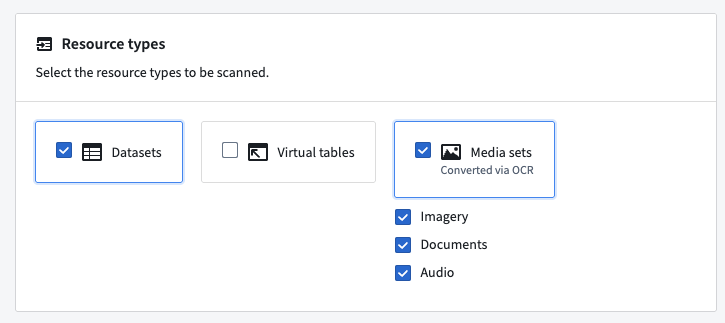
You can explicitly include datasets or folders to scan by selecting Add resource under Included datasets and folders. If you add folders, all datasets within those folders will be scanned, unless they have been explicitly excluded. You must include at least one folder (including spaces/projects) or dataset in this section in order to proceed.
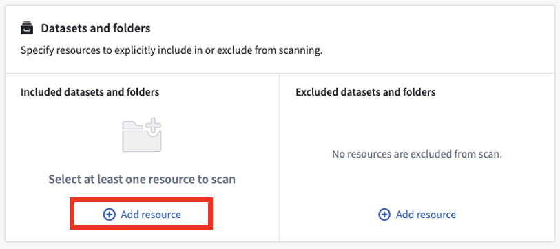
Similarly, you can explicitly exclude datasets or folders to scan by selecting Add resource under Excluded datasets and folders. If you add folders, all datasets within those folders will be excluded from the scan unless they have been explicitly included. You are not required to explicitly exclude any resources (this section can be left empty).
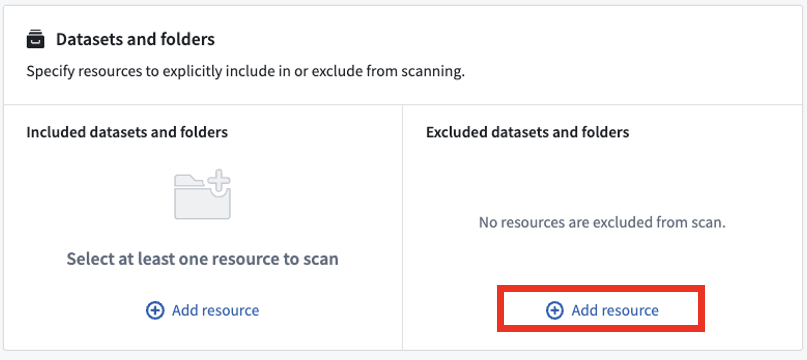
In the rare case where a resource is both included and excluded, the most specific inclusion or exclusion will take precedence. For example, a dataset could be included, but it might be located in an excluded folder. In this case, the dataset (included) is more specific than the parent folder (excluded), so the dataset will be scanned.
The following scan strategy options allow you to further refine the behavior of your sensitive data scan.
Sensitive Data Scanner allows you to specify which datasets to scan based on certain dataset attributes. There are two options:
In the example below, Sensitive Data Scanner will scan only source datasets within the selected folder(s).
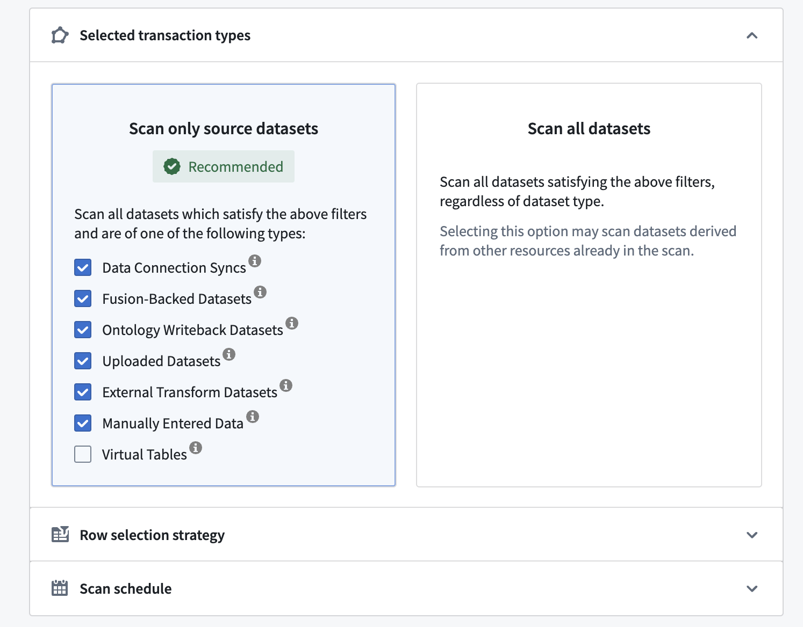
Additionally, you have the option to configure the number of rows to be scanned.
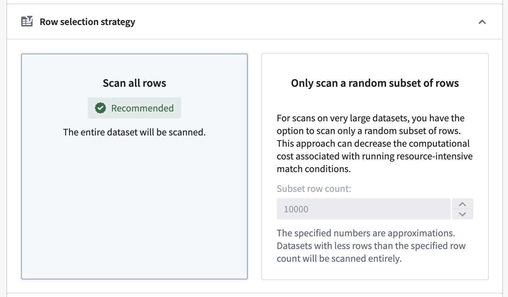
In the Scan Schedule section, you have two options to configure when the scan will run:
:::callout{theme="neutral"} For recurring scans, you can select Perform an initial scan of all matching datasets to scan all current datasets immediately. This ensures that datasets are scanned even if they are not updated later. :::
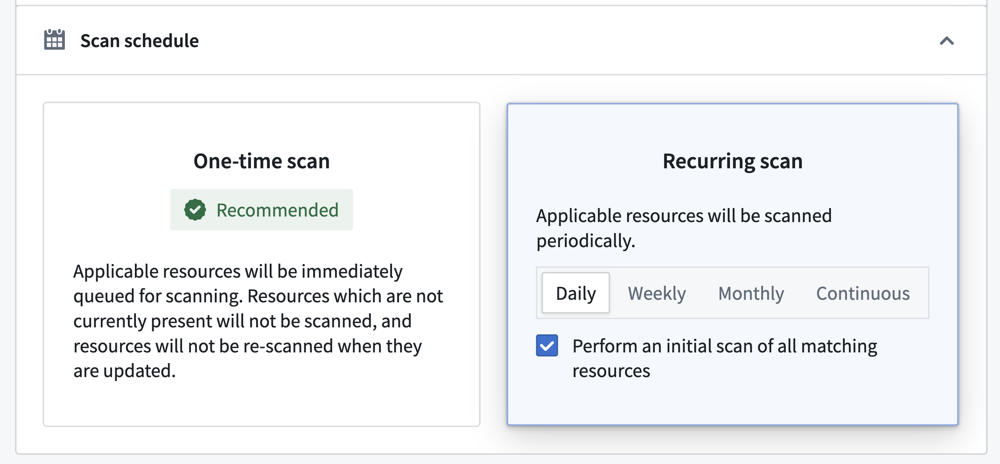
Similar to including and excluding datasets and folders explicitly, you can include and exclude datasets based on the Markings on those datasets. This is an advanced feature that is generally used to exclude datasets that already are protected. For example, in the screenshot below, we see that datasets marked with PII (Personally Identifiable Information) will not be scanned because this PII marking may have been applied after a match in a prior sensitive data scan.
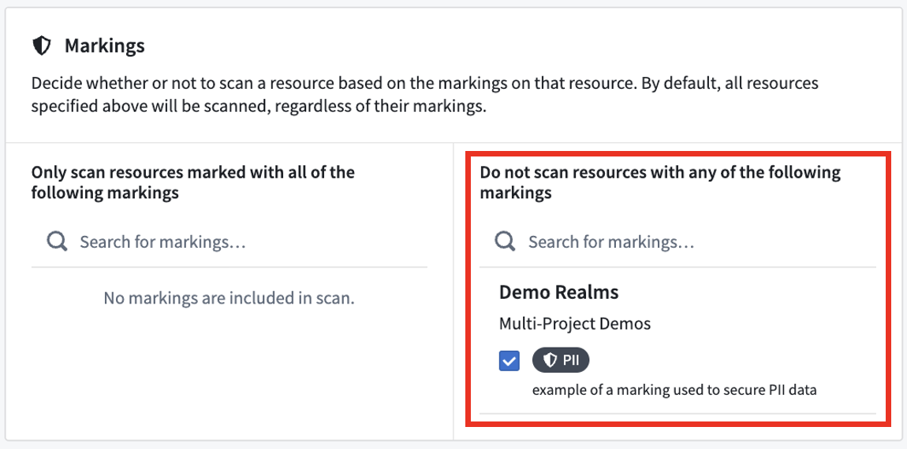
The first steps for creating a sensitive data scan are to select the specific match conditions you would like to look for, followed by the specific match actions that Sensitive Data Scanner should perform if a match is found.
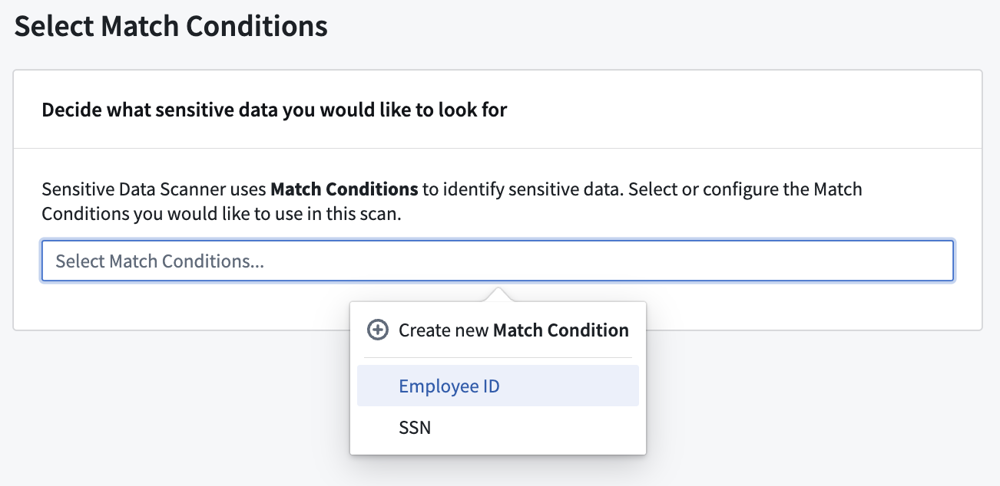
When choosing your match conditions, consider what sensitive data you want to look for and what match conditions are already available for your space. If the desired type(s) of sensitive data do not have a corresponding match condition, you can create a new match condition.
:::callout{theme="neutral" title="LLM usage attribution"} For scans that use a language model match condition, LLM usage is attributed to each scanned resource. :::
When choosing your match actions, consider the appropriate response to detecting your sensitive data. You can choose between three types of actions:
You can also choose to not apply any match action at all.
If the appropriate match action does not exist in your space, you can create one. See Create match actions for more details.
:::callout{theme="warning" title="Test your match conditions"} If your sensitive data scan involves a substantial number of datasets, it is advisable to test the match conditions before proceeding further. Misconfigured match conditions may generate false positives, leading to unwanted issues, markings on datasets, or obfuscated data. To test match conditions, select No Match Actions for your scan. Once the scan has finished and you have verified that the match condition aligns with the expected format of data, you can apply additional match actions from the scan's overview page.
Review Applying additional match actions for more details. :::
In the final stage of creating a sensitive data scan, you can review the match conditions, match actions, and resources that you have selected for the scan.
At this step, Sensitive Data Scanner will also compute the datasets required for the scan based on the resource filters you chose when tuning your scan.
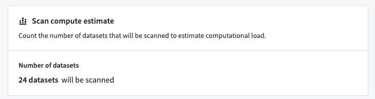
If you chose a one-time scan schedule, you can trigger the scan by selecting Run One-Time Scan.
If you chose a recurring scan schedule, you will also be able to add a name and description for the scan. You can then save the scan by selecting Save as Recurring Scan.
For inactive scans that were created within the past seven days, you can select additional match actions to apply to the sensitive data discovered by the scan.
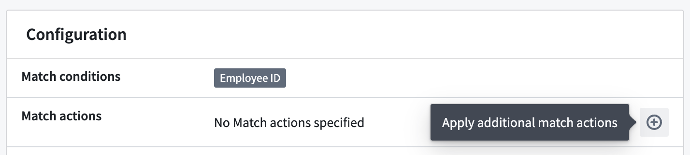
:::callout{theme="warning" title="Recurring scans"} For recurring scans, additional match actions will only apply to matches that were identified up until the point at which the additional match action was selected. If the scan is reactivated later, any future sensitive data detected by the recurring scan will not automatically have the previously selected additional match actions applied. :::
View the status of the application of additional match actions at the bottom of a scan's overview page.
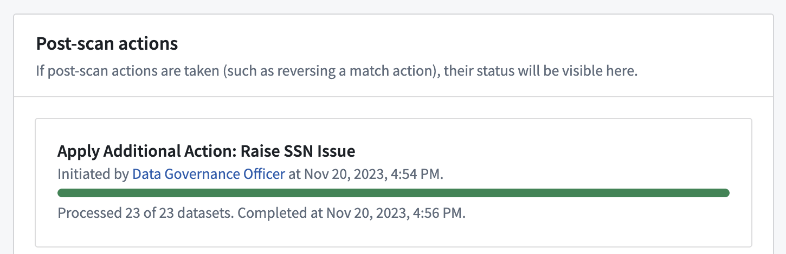
For inactive scans that were created within the past seven days, you can reverse match actions that were previously applied to the sensitive data discovered by the scan. For Create issues match actions, this will result in the deletion of issues created by the action. For Apply markings match actions, it will involve removing the markings that were applied by the action.
Note that obfuscate data actions cannot be reverted.
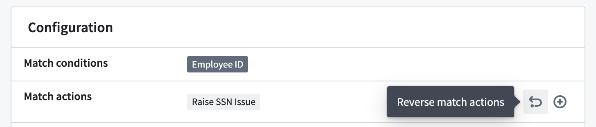
:::callout{theme="warning" title="Recurring scans"} For recurring scans, only the results of the actions up until the time the match action reversal was performed will be reversed. If the scan is later reactivated, any future sensitive data discovered by the recurring scan will still apply the match action if it was configured in the initial scan setup, even after being reversed. To stop the recurring scan from continuing to perform certain match actions when it is made active again, edit the recurring scan to remove the match action before reactivating the scan. :::
View the status of the reversal of match actions at the bottom of a scan's overview page.
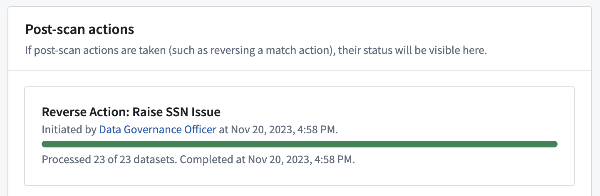